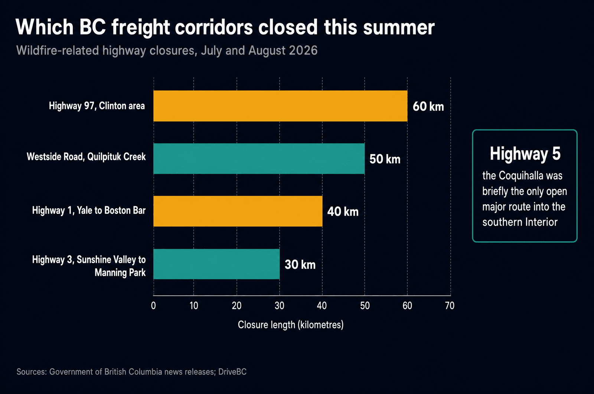
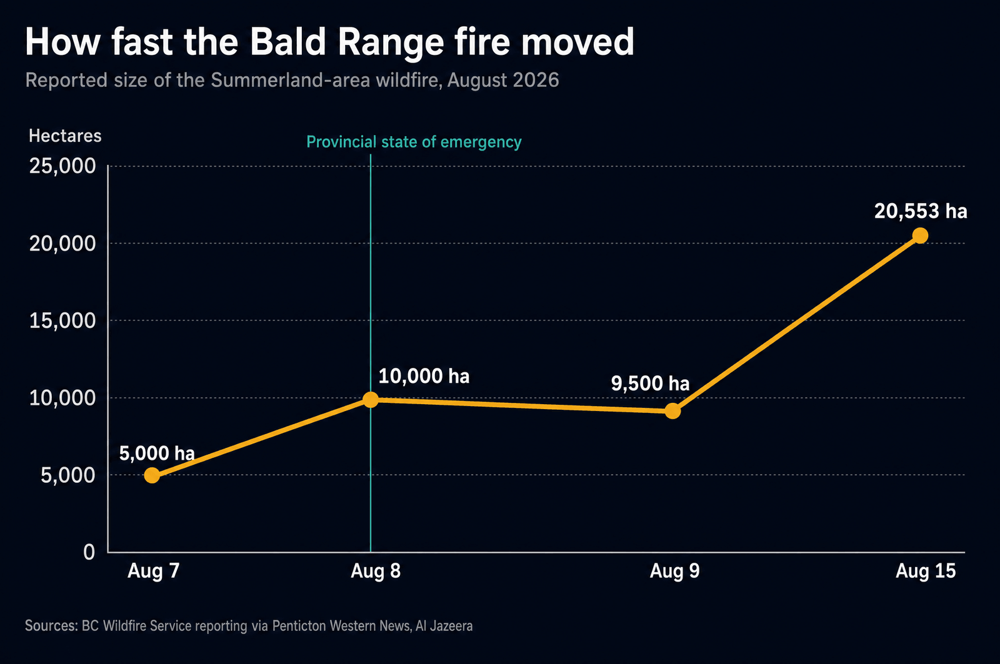
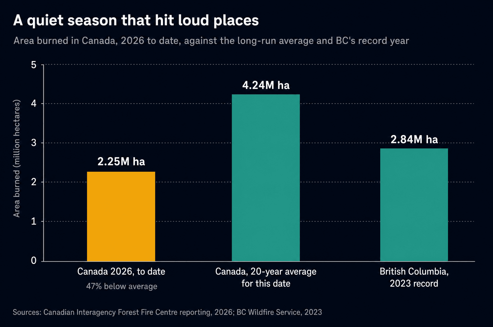

British Columbia has been under a provincial state of emergency since Saturday, August 8, 2026, with more than 100 wildfires burning and close to half of them out of control. Premier David Eby's instruction to residents was blunt: "If asked to evacuate, go immediately. The conditions are changing extremely quickly." More than 20,000 people did, including the entire community of Summerland and roughly 8,000 people around Peachland.
Everything below assumes that human cost is the headline, because it is. What follows is the freight layer underneath it, the one that determines whether a Kelowna grocery store gets restocked, whether a Kamloops plant runs its Tuesday shift, and whether an orchard's harvest reaches a packing house before it drops in value. In British Columbia those questions are decided by four highways, and this summer three of them closed.
What Is Closed Right Now
The Bald Range fire started on August 7 southwest of Summerland and reached Highway 97, the spine of the Okanagan. Highway 97 closed in both directions from just north of Hardy Street in Peachland south to the Pyramid Picnic Area in Kickininee Provincial Park. As of mid-August it reopened on a leash: open 7 a.m. to 7 p.m., through traffic only, 70 km/h, no stopping and no exiting except for permit holders.
That is a twelve-hour daily window on a corridor that normally runs around the clock. For freight it means a truck that misses the 7 p.m. cutoff does not get a slower trip, it gets a twelve-hour hold, and the appointment on the other end is gone.
It was not the only pinch point. On July 16 the province closed Highway 1 in the Fraser Canyon near Boston Bar as the Brunswick Complex flared, with traffic control at Hope and Lytton. It reopened, then closed again, running roughly 40 kilometres between Yale and Boston Bar into August. On July 23 Highway 3 closed between the Hope Slide and Sunshine Valley area and a point 8 km west of Manning Park Lodge, which left the province stating plainly that the Coquihalla was "the only open major route into the southern Interior". Add a 60 kilometre closure of Highway 97 near Clinton and 50 kilometres of Westside Road, and the picture is complete.

Why One Open Corridor Is a Systemic Risk
Southern British Columbia does not have a road network in the way the Prairies do. It has four mountain corridors, and they are not interchangeable. Highway 5, the Coquihalla, is the fast one. Highway 1 through the Fraser Canyon is the older, slower alternative. Highway 3, the Crowsnest, is the southern route and adds hours. Highway 97 is the Okanagan's north to south spine and is not a substitute for any of them.
When three of those four are compromised at once, the province does not lose 75 percent of its capacity in a tidy way. Everything funnels onto one road, which then carries traffic it was never scheduled for, in construction season, alongside evacuation traffic moving the other direction. A single incident on that remaining road, a crash, a rockfall, a new ignition, takes the southern Interior from constrained to closed.
British Columbia has run this experiment before. In November 2021 the atmospheric river severed all of them at once, and the province spent weeks rebuilding a supply chain by hand. We wrote about the structural version of this problem in our June look at how fire season squeezes BC freight corridors. Two months later, it is no longer a forecast.
"A corridor with no alternate is not a route. It is a single point of failure that happens to be 200 kilometres long."
The Fire Moved Faster Than Dispatch Could
The speed is the part that breaks planning. The Bald Range fire was reported at roughly 5,000 hectares on August 7 and about 10,000 hectares the next day, when the province declared the emergency. By August 15 it was measured at 20,553 hectares, still out of control, with about 376 firefighters, 16 helicopters, and 59 pieces of heavy equipment assigned.

"We'll be here for the foreseeable future," BC Wildfire Service incident commander Hugh Murdoch said on August 15. "There's a lot of work to be done." For anyone quoting freight into the Interior, that sentence is the transit-time forecast.
This Is Not Even a Big Fire Year
Here is the uncomfortable context. Nationally, about 2.25 million hectares have burned in 2026 to date, roughly 47 percent below the two-decade average for this point in the season. Compare that with British Columbia's 2023 record, when close to 2.84 million hectares burned in a single province.

A below-average season still produced a state of emergency, 20,000 evacuations, and simultaneous closures on three corridors. Planning freight around a forecast of total hectares is planning around the wrong number. The right question is narrower: is anything burning within reach of the road my freight needs?
What It Costs the Industries Behind the Freight
The bill does not arrive as a line item called wildfire. It arrives as missed shipments, spoiled product, cancelled bookings, and idled shifts.
Export Development Canada's analysis of the last several fire seasons puts numbers on it. During the 2023 season, British Columbia freight moving to the United States and Mexico fell 16 percent year over year, and lumber shipments specifically dropped 20 percent. On the insurance side, the 2023 Okanagan and Shuswap fires produced $720 million in insured damage, third only to Fort McMurray in 2016 at $3.8 billion and Jasper in 2024 at $1.3 billion.
Tourism shows the same pattern of damage travelling well beyond the fire perimeter. After the 2024 Jasper fire, park visits fell from 2.48 million to 1.14 million, a 54 percent decline in a destination that had been generating roughly $446 million in annual visitor spending. This month, operators in the Columbia Valley, hours from the Okanagan fires, are reporting cancellations driven by smoke and by the provincial emergency declaration itself.
Then there is agriculture, and the timing is cruel. The Okanagan produces roughly a fifth of Canada's wine and is deep into tree fruit harvest in August. Freight for that sector is not reschedulable in the way a pallet of dry goods is. A reefer that sits twelve hours waiting for a daylight window is carrying product that is losing value the whole time, which is the same throughput problem we described from the other end in the piece on detention and full warehouses.
How Carriers Actually Reroute
The honest answer is that rerouting in BC is less about finding a clever alternate road and more about buying back time before you need it. Here is what that looks like in practice.
What does the detour actually cost? Canadian truckload operating costs run roughly $1.60 to $2.50 per kilometre depending on equipment and lane, with diesel above $2.39 per litre earlier this year. On that basis a 150 kilometre detour adds about $240 to $375 of direct running cost per load. That is the small number. The expensive part is the two to three hours it consumes, because those hours cascade into a missed appointment, a receiver's closed dock, or a driver running out of legal time short of the destination. The route discipline behind all of this is the same one we set out in optimizing freight routes.
What Shippers Can Do This Week
How Keylink Runs Fire Season
We are based in Abbotsford, at the western end of every corridor in this article, with a second office in Calgary at the other end. Fire season is not an interruption to our planning year, it is a scheduled part of it from June through September.
Practically: we route to the open window rather than the shortest line, we check DriveBC at dispatch and again before the corridor commitment, we hold freight deliberately rather than parking a driver at a control point, and we tell customers about a reroute while it is still a choice rather than after it has become a missed delivery. Drivers have standing authority to turn around. No load outranks that.
Send us the lane and the delivery window. We will tell you what the corridors can realistically do this week, and what the detour costs before you commit to a date.
Get a Quote →Questions We Get Asked
Which BC highways are affected right now?
Highway 97 has been closed between Peachland and Kickininee Provincial Park because of the Bald Range fire, running on a 7 a.m. to 7 p.m. through-traffic window with a 70 km/h restriction as of mid-August. Highway 1 was closed for roughly 40 kilometres between Yale and Boston Bar, Highway 3 closed in July between Sunshine Valley and Manning Park, and a 60 kilometre stretch of Highway 97 near Clinton plus 50 kilometres of Westside Road have also closed. Conditions change daily, so DriveBC is the authority before dispatch, not this article.
What does a wildfire detour cost per load?
Canadian truckload operating costs run roughly $1.60 to $2.50 per kilometre depending on equipment and lane, so a 150 kilometre detour adds about $240 to $375 in direct running cost. The larger cost is the two to three hours consumed, which often pushes the load past its appointment, into a closed receiving window, or into a mandatory rest period.
How much economic damage do wildfires cause Canadian industry?
Export Development Canada reports BC freight to the US and Mexico fell 16 percent year over year during the 2023 fire season, with lumber down 20 percent. Insured losses run to $3.8 billion for Fort McMurray in 2016, $1.3 billion for Jasper in 2024, and $720 million for the 2023 Okanagan and Shuswap fires. Tourism damage travels furthest: Jasper visits fell 54 percent the year after its fire.
Is 2026 a record wildfire season?
No, and that is the point. About 2.25 million hectares have burned nationally in 2026 to date, roughly 47 percent below the two-decade average for this date. A below-average season still produced a provincial state of emergency, more than 20,000 evacuations, and simultaneous closures on three of four southern Interior corridors, because the fires landed where the roads are.
How should a shipper prepare for fire season?
Build the detour into the transit time instead of discovering it mid-trip, move time-sensitive and temperature-controlled freight earlier in the week, flex receiving hours so a daylight-only corridor does not strand a truck overnight, price a second routing in advance, and require live tracking so a reroute is a phone call rather than a surprise. Treat June through September as a known annual risk.
Do carriers get paid for wildfire detours?
Usually not automatically, because most contracts price a lane rather than a route, so the extra kilometres and hours land on the carrier unless the agreement says otherwise. Agree in advance how a documented emergency closure is handled, by a per-kilometre detour rate, a revised transit commitment, or both, so nobody is negotiating while a truck sits at a traffic control point.
Sources and Further Reading
- Government of British Columbia, "Highway 1 closed at Boston Bar as wildfire activity increases", July 16, 2026.
- Government of British Columbia, "Highway 3 closure adds to limited Interior travel options", July 23, 2026.
- Penticton Western News, "Summerland wildfire grows to almost 20,000 hectares", August 15, 2026.
- Al Jazeera, "British Columbia wildfire forces more than 20,000 to flee, destroys homes", August 8, 2026.
- Export Development Canada, "Canada's wildfire crisis: economic and trade disruption".
- CBC News, "Okanagan wildfires hurting tourism in B.C. towns hundreds of kilometres away".
- DriveBC, current highway advisories, and EmergencyInfoBC for evacuation orders and alerts.
- SSP Group, "How much does flatbed trucking cost in Canada?", January 2026, for per-kilometre operating cost ranges.